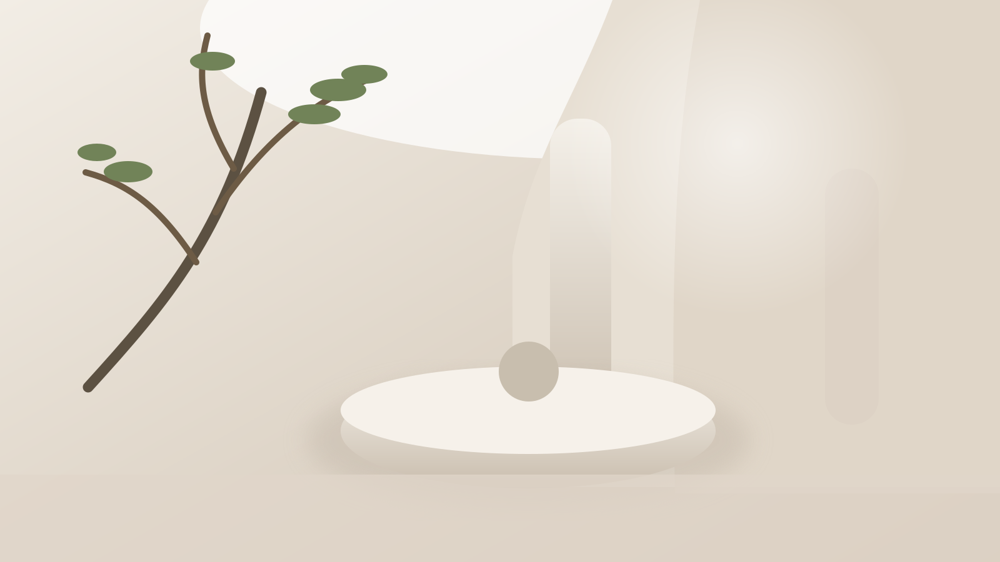
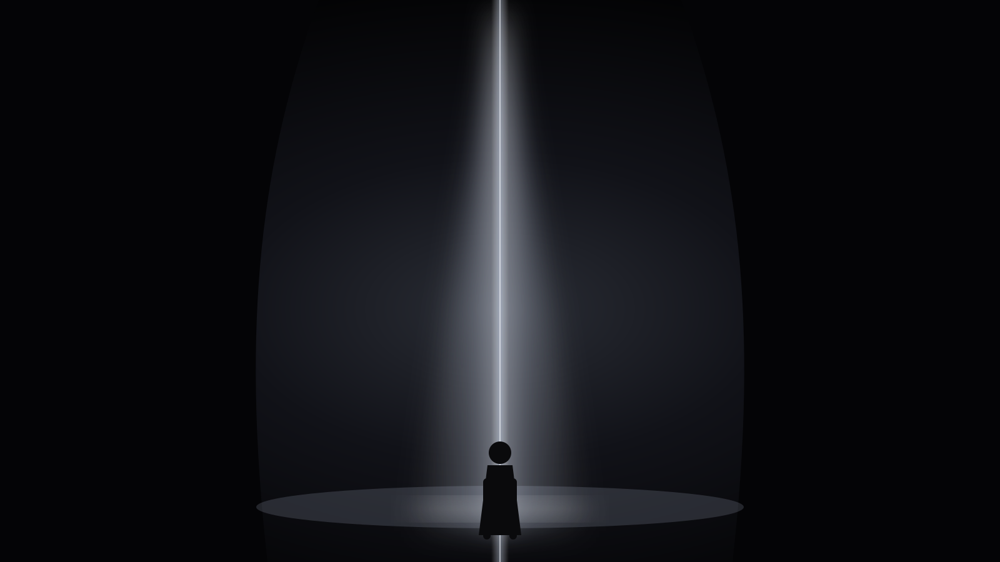
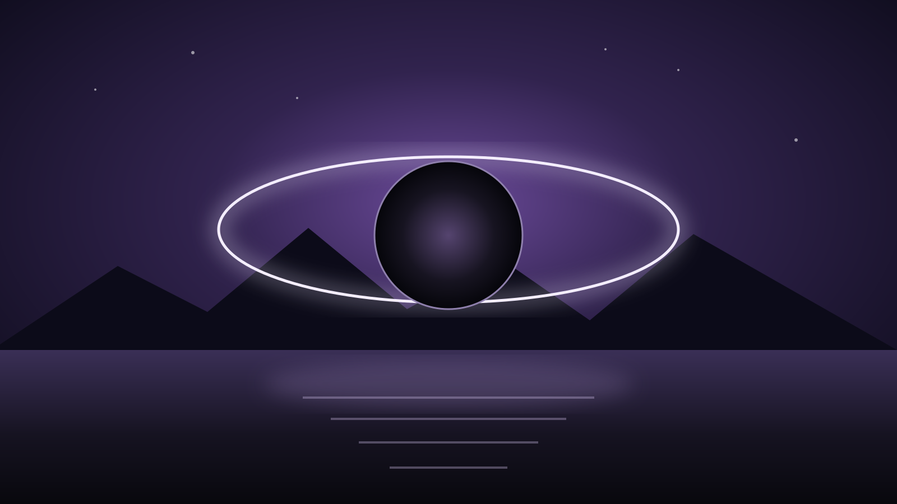
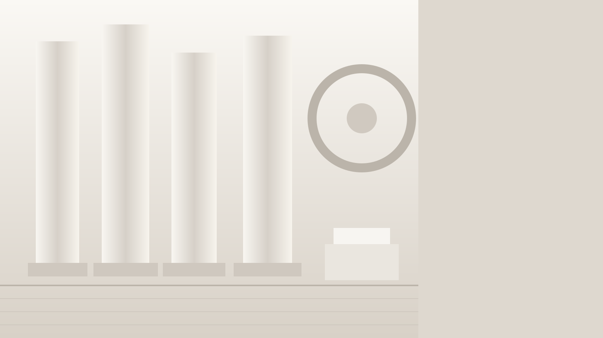
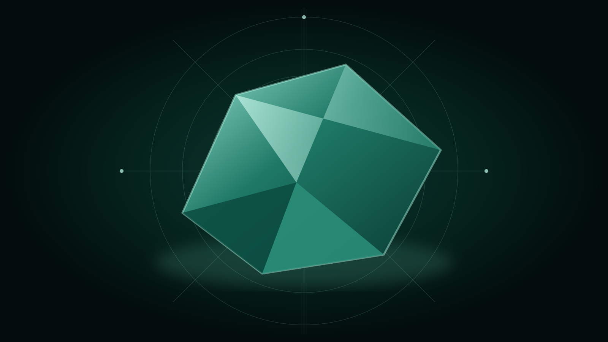
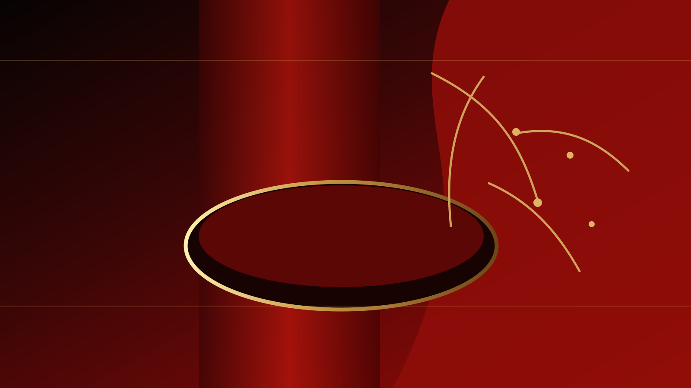
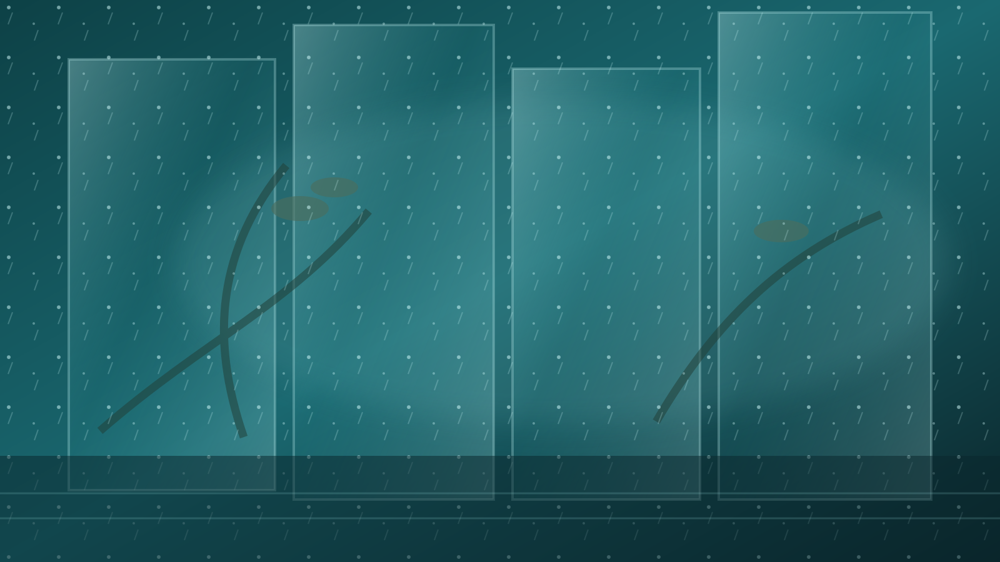
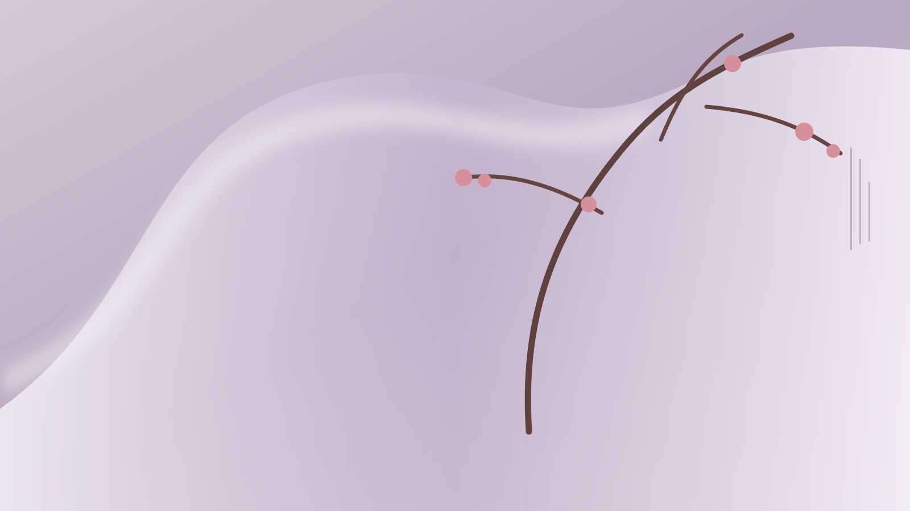
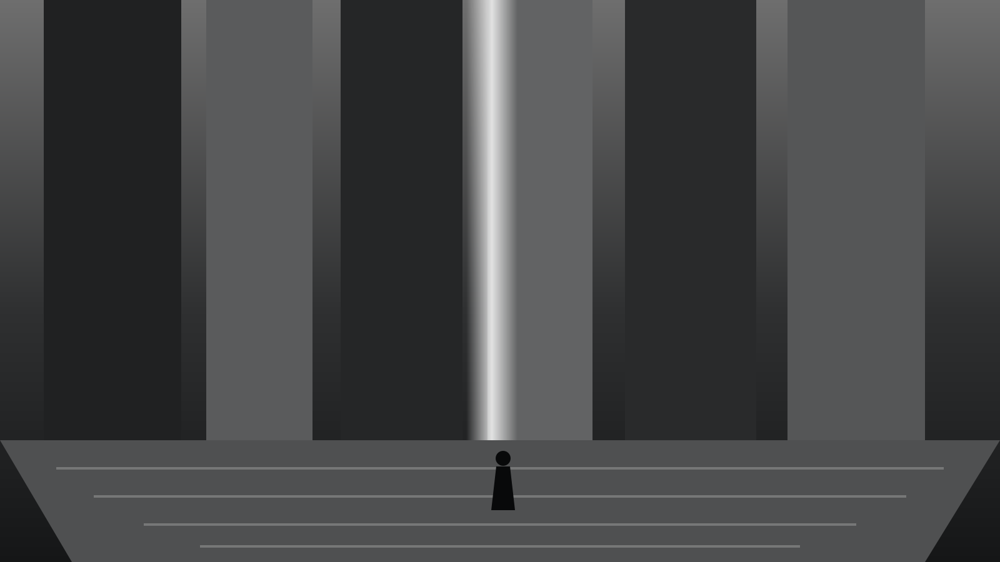
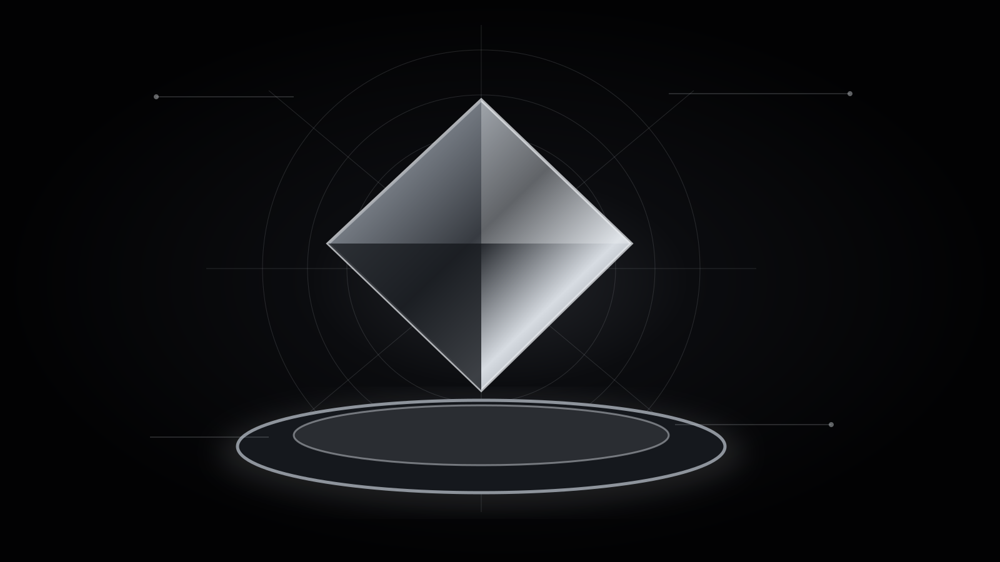

Light is our first material.
ENTER THE ATELIER
We sculpt with time and darkness.
ENTER THE CINEMA
Beyond form, a larger harmony.
CROSS THE THRESHOLD
An index of things that endure.
EXPLORE THE INDEX
ARCHITECTUREARTIFACTSRITUALSTEXTURESREFERENCES
Insight, cut from clarity.
ENTER THE SYSTEM
PERCEPTIONDATAPATTERNSDECISIONSEVOLUTION
Tradition is our technology.
VIEW THE COLLECTION
We collect weather and memory.
PASS THROUGH
Softness is a kind of strength.
READ THE JOURNAL
For tomorrow, we build with purpose.
SEE THE VISION
The future is our atelier.
ENTER THE MAISON
D’AUBE SONNTAG
MAISON OS ∞INTELLIGENCEMATERIALSEXPERIENCESECOSYSTEM
MAISON OS ∞INTELLIGENCEMATERIALSEXPERIENCESECOSYSTEM